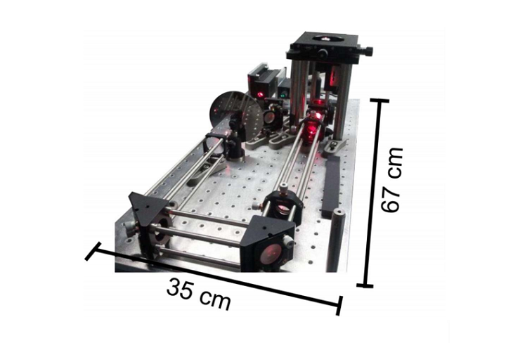

A Blueprint for Cost-Efficient Localization Microscopy

This paper, "A Blueprint for Cost-Efficient Localization Microscopy," write it's own summary better than we ever could:
"In this study, we questioned every technical high-end component used in standard localization microscopes to reduce the total cost of a wide-field setup and to ensure continued single-molecule sensitivity. We demonstrate that localization microscopy with subdiffraction resolution on fixed and living biological samples could be achieved with technical instrumentation for less than $25,000"
As is so often the case, the real meat of the paper with all the prices is buried away in the supplementary material.
The paper was written by Thorge Holm, Teresa Klein, Anna Lçschberger, Tobias Klamp, Gerd Wiebusch, Sebastian van de Linde, and Markus Sauer.